2 How Self-Reinforcing Feedback Loops Create Runaway Polarization
This chapter uses minimal examples to introduce negative and positive feedback loops and their effects on system behavior. I will show that positive feedback loops create inequality and polarization, and highlight a fundamental difference between linear polarization created by proportional positive feedback, and Runaway Away Polarization due to greater-than-proportional (nonlinear) positive feedback. But first, to avoid cascading misunderstandings, Boxes 2.1 and 2.2 define a few key terms.
Box 2.1. Feedback in Dynamical Systems
A system is a collection of interacting components with a distinct behavior or function. A paperclip is a system. So is a sports team. Systems whose behavior changes over time are known as dynamical systems.
Feedback refers to situations in which a system’s response to a set of inputs depends on its state at the time of receiving the inputs, as illustrated schematically in Figure B2.1. Feedback loops have been studied widely in engineering, biology, physics, chemistry and many other scientific disciplines because they are essential for regulating the behavior of dynamical systems (see 1 for an authoritative review and many excellent examples).
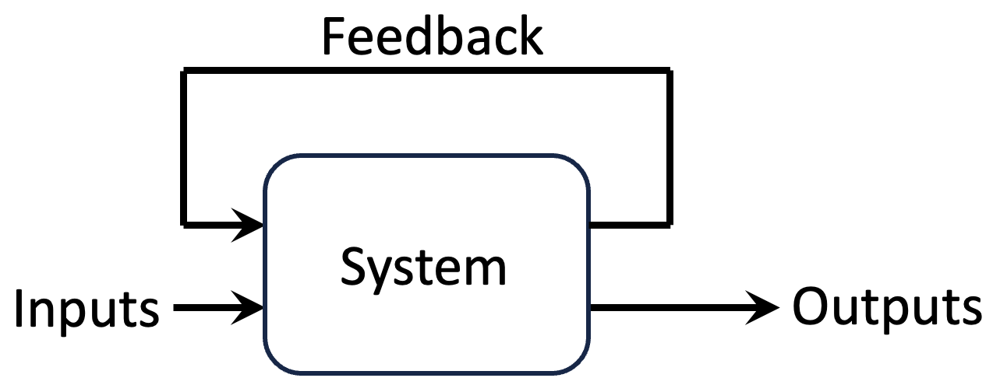
Figure B2.1. Schematic diagram of a system with feedback. The outputs of such a system depend not only on its inputs, but also on the current state of the system.
2.1 Box 2.2. Natural, Engineered, and Human Systems
I will use the term Engineered systems to mean systems that are designed and built to a defined specification (e.g. microchips, airplanes). In contrast, I will use the term “Human-made systems” to refer to systems that are created by humans, but not to a fixed or predefined specification (e.g. political, economic, and financial systems). Human-made systems often don’t have a well-defined design team. Instead, they evolve over time to take advantage of new developments and to meet changing needs.
Unlike engineered and human-made systems, “human-shaped systems” are typically not invented by humans, but are aspects of the natural world that are co-opted and significantly modified by humans. Human-shaped systems span a broad spectrum. At one end are systems that have evolved around human inventions, such as shipping and aircraft routes. At the other end are systems such as the earth’s climate and ecosystem, which were not created by humans, but are now being substantially modified by us.
The boundaries among the above categories of systems are fuzzy, so that in reality, there is a near continuous spectrum of systems. In part, this is because engineered and human-made systems often incorporate natural systems (e.g. windmills), or they are the products of much trial and error rather than intentional design (consider how bicycles have evolved since the invention of ‘swiftwalkers’). In addition, many of our political, social, economic, and even engineered systems begin as responses to natural constraints (e.g. convenient routes for crossing mountains), and then gradually evolve into complex systems (road networks).
I will sometimes use the term ’societal systems’ to mean human-made and human-shaped systems involving communities of interacting humans. Whereas human-shaped and human-made systems additionally include systems with key non-human components (e.g. shared water resources among farmers), societal systems are focused on human interactions (e.g. families, tribes, online social networks).
For the sake of brevity, in the rest of this book, I will refer to human-made, human-shaped, and societal systems collectively as Human Systems 7.
2.2 Negative Feedback Loops Resist Change and Stabilize
As the name implies, change-limiting feedback (aka negative feedback) works to maintain the status quo. Change-limiting feedback loops are resistant to change. As such, they are essential for stability and are widely used in everyday objects such as thermostats, toilet cisterns, and gas-pump auto-cutoff-switches. Because negative feedback loops resist change, they are sometimes accused of causing stagnation, paralysis, and mediocrity 2.
Change-limiting feedback loops have been used in engineered systems for at least 2000 years 8. Although no copies of his work survive, Ctesibius of Alexandria (in modern day Egypt) is thought to have invented the first change-limiting feedback regulator around 250 BC. To make a water clock more precise, Ctesibius devised a valve that was operated by a float 3. The valve reduced the in-flow when the water in the chamber rose, and increased the in-flow when the level of water in the chamber fell. While the overall design of the water clock is too complex to go into here 9, a simple illustrative model of the float regulator is shown in Figure 2.1. The cartoon in Panel A illustrates the underlying idea, and the graphs in Panel B give examples of the resulting behavior (maintenance of a nearly constant water-level in the tank).
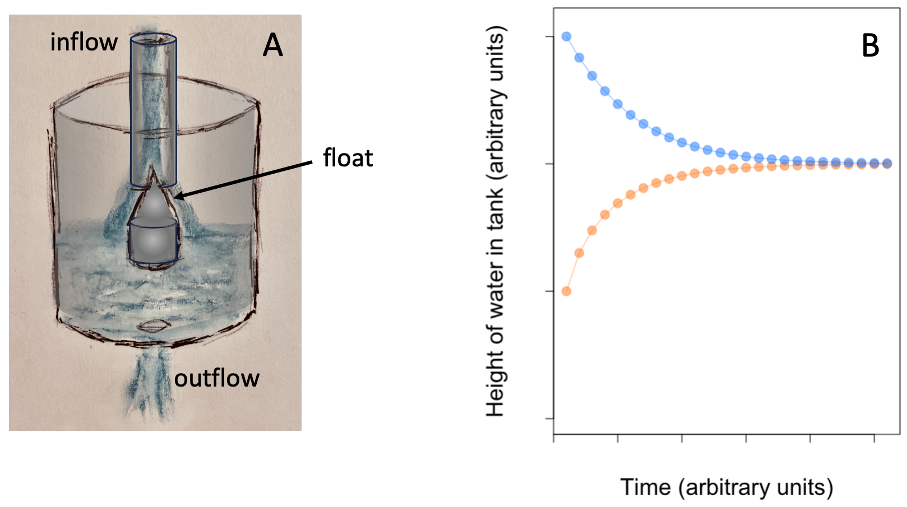
Figure 2.1. A float valve acting as a change-limiting feedback loop. The design is summarized in panel A. Water floats into the tank from the top and drains from the bottom. The float rises with the level of water in the tank and progressively reduces the inflow as the water level rises. Panel B shows example simulations starting with different water levels in the tank. Irrespective of the starting level of water, the float-valve adjusts the inflow so as to drive the steady state water-level towards a preset level.
2.4 Positive Feedback Loops Reinforce Change and Polarize
Change-reinforcing feedback loops (aka positive feedback loops, or self-reinforcing feedback loops) amplify changes driven by external inputs. Change-reinforcing feedback loops create virtuous cycles when the change they reinforce is in a direction that we like, but they can also create vicious cycles that drive change in undesirable directions.
Compound interest on savings is an example of change-reinforcing feedback (see Figure 2.2). In a savings account, sums deposited into or withdrawn from an account (inputs) change the account’s state (its balance), and the amount of interest the account will earn going forward. A positive feedback loop is formed when some, or all, of the interest is reinvested in the account. Deposits will increase earnings; withdrawals (negative inputs) will reduce earnings. Left untouched, savings accounts with positive and negative balances will spiral in opposite directions.
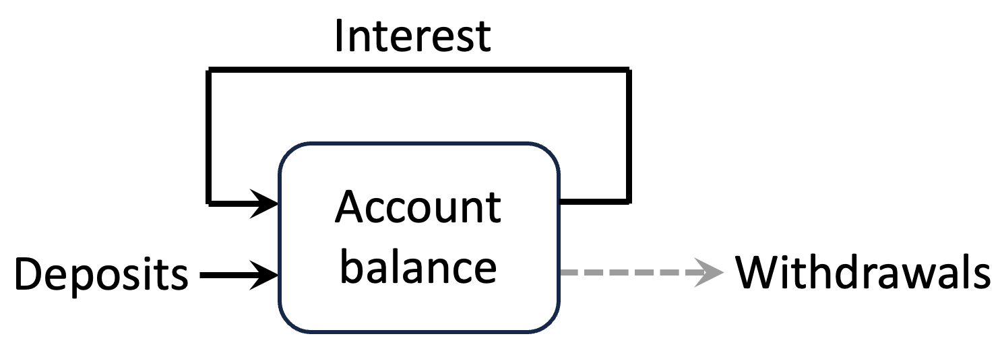
Figure 2.2. Compound interest as change-reinforcing (positive) feedback in a savings account. Here, the feedback mechanism is in the form of interest that is re-invested into the account.
Suppose, for example, that the family of a newborn open a savings account for the baby at birth, put $100 in it, and then never touch the account until the child is 20. If the interest earned is added (fed) back into the account each year, then the interest earned each year will increase in proportion to the initial investment plus all interest earned to date.
Because the feedback/interest rate is in proportion to the account balance, this kind of feedback is known as proportional or linear feedback. But note that it is the feedback that is linear. The account balance will actually increase exponentially. Figure 2.3A shows an example. Here, the disks indicate the account balance at the end of each year. We see that the account balance grows at a faster and faster pace over time. The dashed line shows what the balance would be if there was no interest-on-interest feedback (i.e. if interest was paid only on the amount of money deposited). Note that – like the account balance itself – the difference between the solid and dashed lines also increases exponentially over time.
If the initial investment is positive (a deposit into the account), the account balance will increase by greater and greater amounts each year. If instead of a deposit, the account had started with an overdraft, and the bank charged interest not only on the initial overdraft, but also on the cumulative interest (as in credit-card debt) the account balance will become more negative (i.e. overdrawn) over time. Figure 2.3B shows how the balances of accounts with positive and negative starting-values diverge increasingly sharply over time.
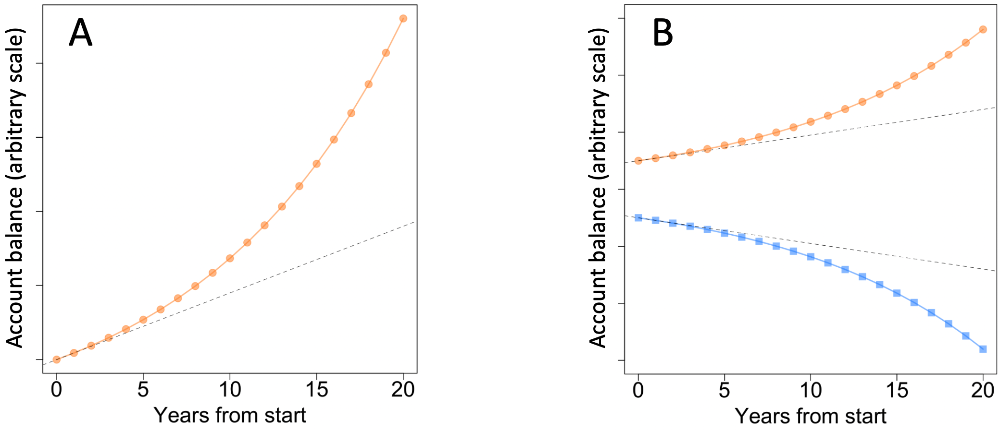
Figure 2.3. Over time, compound interest increases total interest earned. A. The effect of compound interest on a single deposit. The dashed line shows total interest earned if interest is only accrued on the initial deposit (and not on previously-earned interest). B. The top portion of the plot is the same as in panel A. The lower portion shows the balance of an account that starts with a negative sum (an overdraft).
Figure 2.4 shows the account balances of 50 accounts with initial balances evenly distributed in the range -$100 (i.e. $100 overdrawn) to +$100. Here, compound interest creates a virtuous cycle for those with savings, and a vicious cycle for those with overdrafts. It makes those with savings richer, while it drives people with debt further and further into debt.
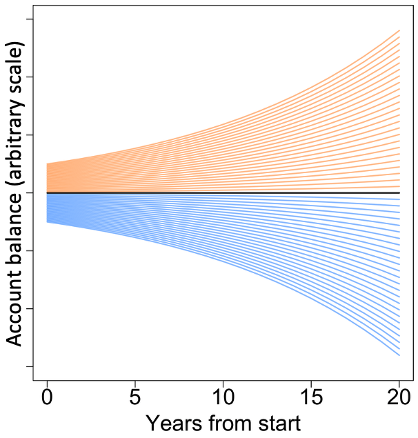
Figure 2.4. The effect of compound interest for a range of initial deposits. The relative values of all accounts remain the same over time. Negative account balances (in blue) indicate debt.
Note how, although the absolute values of the balances diverge over time, the relative values of the accounts remain the same at all time points (neighboring curves are all the same distance from each other at every time point). When the interest/feedback rate is a fixed proportion of the account balance, account balances diverge from each other over time (i.e. they become more unequal) in absolute terms. But, relative to each other, people are not better or worse off.
To see this point more clearly, consider two families, let’s say the Smiths and the Joneses. Suppose the Joneses put $100 in their baby’s account at birth. The Smiths don’t just keep up, they outdo the Joneses by investing $110 in their baby’s fund. For both families, let us assume everything else is exactly as in our previous scenario.
As expected (see Figure 2.5), both accounts grow exponentially. The absolute difference in the account balances increases over time, but the relative difference between the two remains 10% at all times. In short, for people who are able to save, cumulative interest earnings enrich everybody in the same proportion. Unfortunately, as we will see shortly, this is rarely true in more realistic models of compound interest and in Human Systems in general. Instead, we see an increasing divergence of relative wealth.
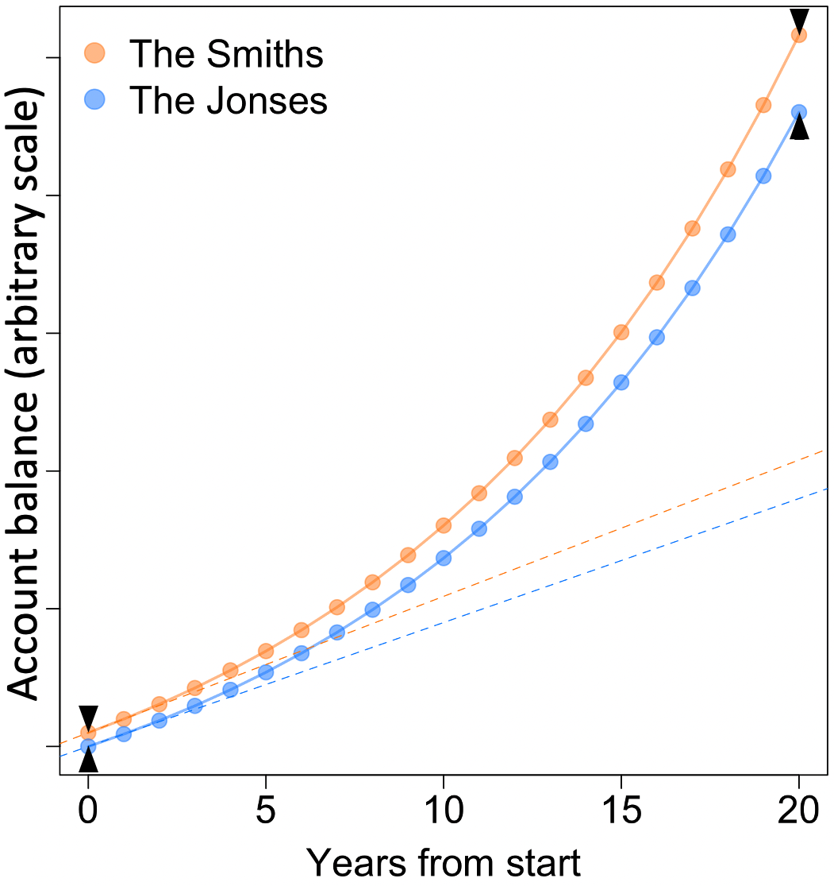
Figure 2.5. Compound-interest savings account balances for accounts with different initial investments and the same interest rate. The balances diverge over time (see black arrow heads), but the relative values of the two accounts remain the same (10%) over time.
Needless to say, feedback-mediated growing-apart is not something that only happens to savings-account balances. The same polarizing forces act in our everyday social networks, politics, educational opportunities and achievements, and just about every other human endeavor (who we make friends with, who we get our news from, where we live, and so on).
For simplicity, the examples so far have considered systems with only one kind of feedback, either positive, or negative. In practice, most things degrade or in some other way lose value over time. For example, savings account balances can depreciate due to inflation, taxes, service charges, and withdrawals. When losses are a function of the total amount (e.g. inflation), they create a stabilizing negative feedback loop. In particular, when the rates of growth and loss of something are equal, there is no change, and the quantity of interest is said to be in a steady state (see Box 2.3 for more).
Box 2.3. Steady States and Their Attractors
Imagine a herd of bison roaming free in the pre-Columbus Americas. The total number of bison in any given year will go up or down depending on how many are born that year, and how many are lost to illness, death, hunting, etc. If the rates of population gain and loss happen to be equal, then the population size will be in a steady (unchanging) state. But even a small change in either the total population gain or the total population loss rate will destroy this steady state.
The only way to maintain a stable steady state in spite of random perturbations such as the weather changes, diseases, etc. is through negative feedback. We saw in Figure 2.1 an example of a negative feedback loop creating such a stable steady state. Stable steady states are analogous to a ball resting at the bottom of a bowl, as in Figure B2.3A.
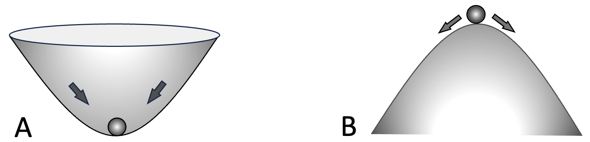
Figure B2.3. Stable and unstable steady states. A. a ball resting at the bottom of a bowl is in a stable steady state in that if we move the ball away from this position and then let go, the ball will return to its previous resting position. In contrast (panel **B*)**, positive feedback loops create unstable steady states, analogous to a ball resting on top of an overturned bowl. The smallest perturbation will cause the ball to fall in the direction of the perturbation.
By themselves, positive feedback loops just drive systems to their extreme values. If these extreme values have natural limits (e.g. the proportion of all votes taken by a particular party) then in the presence of positive feedback loops, these extremes become stable steady states, i.e. states that the system moves towards and then remains at. In addition to such stable states, positive feedback loops also create unstable steady states. In our compound-interest savings-accounts example, a zero account-balance is an example unstable steady state. If the balance increases even a tiny bit above zero, it will start accumulating interest and grow over time. If the account goes into the red, no matter how small the overdraft, the balance will become increasingly negative over time. Unstable steady states are analogous to a ball resting on top of an overturned bowl, as in Figure B2.3B.
Real life systems often have many interacting positive and negative feedback loops. Such systems can have multiple steady state points, as well as stable patterns of behavior such as oscillations and stochastically-varying but stereotyped patterns. Collectively, steady states are called attractors.
Any quantity with a lower rate of growth than rate of loss will shrink over time, and anything with a higher rate of growth than rate of loss, will keep growing. But there is a catch here, nothing that has a physical aspect can grow indefinitely because infinity only exists as a mathematical concept. So, in practice, either growth ultimately stops, or a system crash causes dramatic and sudden losses (such as when financial markets crash 4,5). But, human ingenuity often finds a work-around in such circumstances. Instead of trying to grow further in the face of diminishing returns or a potential crash, humans often find alternative avenues for growth. For example, a company approaching 100% market-share (monopoly) in one geographic area may expand into new locations, or into new market-sectors.
2.5 Runaway Polarization (RAP)
Banks can earn more from savings accounts with a larger balance, and can save administration costs by attracting a small number of high-value clients instead of a large number of poorer clients. Consequently, banks sometimes offer tiered interest rates, say 1% for balances below $1000, 2% for balances above $10,000, 3% for balances above $100,000, and so on. Equivalently, instead of offering different rates on the same account, commercial banks, investment banks, private equity firms, etc. offer different investment options for customers with different amounts of money. In scenarios such as these, where the rate of change-reinforcing feedback (the interest rate) is an increasing function of the system state (the investment balance), small differences in starting points result in increasingly large differences over time.
Figure 2.6 shows how tiered interest rates change the Smiths and Joneses savings accounts. In contrast to the earlier example (Figure 2.5), here the interest rate goes up with every additional $100 in the balance. At first glance, the left-hand plot looks similar to Figure 2.5. However, the curves in this figure have a distinct “hockey-stick” shape to them. They look a little like the letter “J”. The initial portion of the curves looks a little flat compared to Figure 2.5, whereas the later portions of the curves have a notably sharper incline. Another key difference is that in Figure 2.6, the two curves grow apart at an increasing rate. As shown in the right-hand plot, while the Smith’s account balance starts off being only 10% larger than the Jones’s balance, by year 20, it is more than twice as large. As shown Figure 2.7A, hockey-stick growth invariably results in increasing relative inequality.
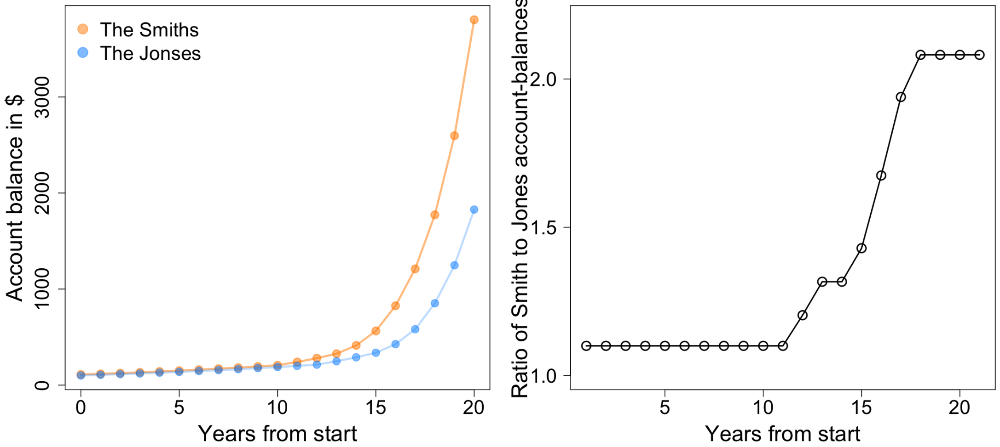
Figure 2.6. Tiered interest rates increase relative differences over time.
Because of their ever-increasing rate of growth, hockey-stick curves rapidly approach infinity 1, which can’t happen in the real world. So hockey-stick growth curves must either saturate and level off, or the system undergoing this kind of growth will crash, as in stock market bubbles.
As we will see later, in healthy natural systems, hockey-stick growth curves saturate quickly, creating stable, sharply-delineated patterns. In contrast, in Human Systems, people benefiting from increasing relative inequality often use their greater resources to remove barriers to their continued growth, and when that is no longer possible, they start a new round of hockey-stick growth (Figure 2.7B) by branching into new dimensions (e.g. a sport or movie star launching their own clothing brand, or a reality-TV personality becoming a politician). Either way, we end up with long periods of ever-increasing relative inequality, which I call Runaway Polarization (RAP for short).
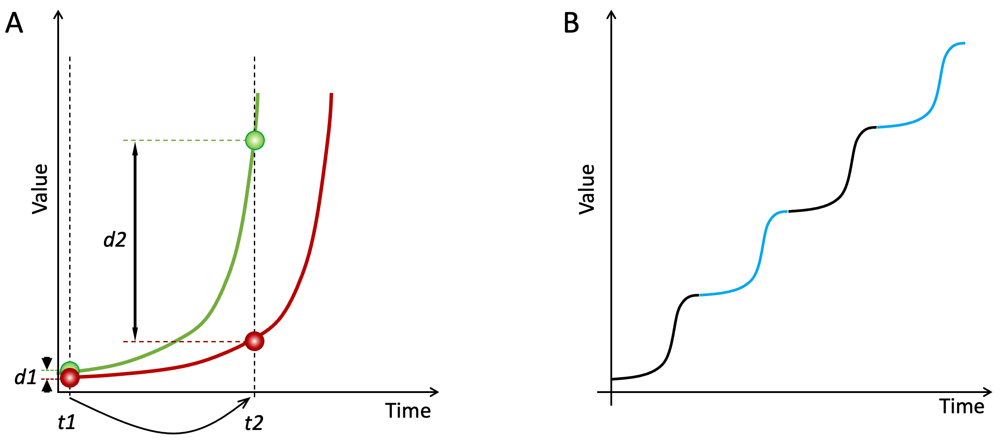
Figure 2.7. Explosive growth, increasing relative inequality, and Runaway Polarization. Panel A shows two example entities following the same hockey-stick growth pattern. At time t1, the green entity has a value slightly greater than the red entity, and is in effect, a little further along the growth trajectory (the green curve is shifted left compared to the red curve). As a result, by time t2, the green entity has a far greater value than the red, in both absolute terms and relative terms (d1 and d2 indicate the differences between the two entities at times t1 and t2). In the absence of interventions, the explosive growths of the entities will ultimately reach a limit and level off. Panel B shows a common occurrence in Human Systems. Shown is the time trajectory for one entity benefitting from hockey-stick growth, e.g. a business represented by the green entity in panel A. Every time the business’s growth saturates and levels off, it finds a new way to grow, for example by opening branches in new locations, through acquisitions, or by expanding into new market types. The result is a staircase-like growth trajectory consisting of a series of consecutive hockey-stick growth phases.
Compound interest with variable rates is just the simplest example of RAP that I could think of to introduce the concept. Box 2.4 lists a few examples of how increasing rates of return may impact diverse aspects of our lives.
Box 2.4. Examples of the Compounding of Privilege and Disadvantage
Of necessity, discourse on inequality and polarization has so far focused on establishing the scale of the issues and identifying the key societal factors. Often acknowledged, but not dwelt on is how privilege tends to beget more privilege, and earlier disadvantages increase the likelihood of additional later disadvantages, leading to what “The Big Sort” author Bill Bishop called “a more fundamental kind of self-perpetuating, self-reinforcing social division” 6. Consider, for example, the effects of privilege and disadvantage on children’s educational attainments.
Parents everywhere do everything in their power to give their children the best start in life. The benefits of parents investing in their children are well-established, so I will not repeat them here. However, not all parents are equally gifted, skillful, or resource-rich. So, through no fault of their own, some children grow up to be far less prepared for adult life compared to others. As the Harvard sociologist Daniel Bell puts it 7:
There can never be a pure meritocracy because high-status parents will invariably seek to pass on their positions, either through the use of influence or simply by the cultural advantages that their children inevitably possess.
Parentage also has strong indirect effects on how children develop. For example, a study of more than 2,000 6–12 year olds who were followed for up to 7 years 8 found that:
[…] neighborhood effects in our data are not instantaneous but rather are manifested several years later. […] We estimate that concentrated disadvantage reduces later verbal ability by >4 IQ points, or >25% of a standard deviation. To put this magnitude in comparison, 1 year in schooling has been associated with between a 2- and 4-point gain in IQ.
A recent study of more than 8,000 9-10 year old children from 17 US states found that income inequality dramatically affected physical brain development in terms of both total volume and functional connectivity 9. Note that this finding is about the effects of income inequality, not about the effects of poverty per se. The authors speculate that inequality creates chronic social stress, which in turn leads to the observed deficits in brain development. Accordingly, the authors report that higher income inequality was associated with greater mental health issues later on in the children’s lives.
In his 2008 book “Outliers: The Story of Success” 10, Malcolm Gladwell gives this description of how cumulative educational advantages reinforce and amplify existing advantages and disadvantages:
[…] wealthier parents were heavily involved in their children’s free time, shuttling them from one activity to the next, quizzing them about their teachers and coaches and teammates. […] That kind of intensive scheduling was almost entirely absent from the lives of the poor children. […] Even in fourth grade, middle-class children appeared to be acting on their own behalf to gain advantages.
I have added the emphasis to highlight a key point. Advantages don’t just give you a leg up, they change you. They make you more likely to benefit from future opportunities. Gladwell doesn’t mention feedback loops explicitly. But he does point out that advantages act as springboards for future advantages:
[…] success arises out of the steady accumulation of advantages: when and where you are born, what your parents did for a living, and what the circumstances of your upbringing were all make a significant difference in how well you do in the world.
From pre-school to grade school, to high school and beyond, differences in earlier upbringing are often dramatically amplified by organizational, administrative, and legal provisions such as how school-districts are defined, funded, and run; school meals programs; school/teacher/student performance metrics; summer, after-school, special-needs, and gifted-student programs. The result is that hard work only makes a marginal difference to future success. Across the world in the 2000s, just two factors, parent’s income and country of birth, were sufficient to predict more than 80 percent of a child’s future income 11.
Feedback loops similar to those that drive educational polarization in a given generation of children also create polarized inter-generational legacies. A striking example of this is described by Sathnam Sanghera in “Empireworld”, his remarkable survey of the lingering effects of the British Empire around the world 12. In the early 1800’s, the British ran the island of Mauritius as a sugar-producing slave colony. But following the abolition of overt slavery, they switched to importing indentured Indian workers.
Compared to the descendants of the slaves, the descendants of the indentured laborers have done amazingly well in Mauritius, accounting for all but one of the island’s post-independence prime ministers. The most likely reason, Sanghera says, is that indentured laborers who continued to live on the island after their 10 years of near-slavery were allowed to own property, whereas freed slaves were not.
Considered from the perspective of cumulative effects, policies such as affirmative-action and race-aware college admissions are woefully ineffective strategies. By the time children reach college age, some have had vastly more resources spent on them than others, and they are vastly better equipped for future success than others.
The compounding effects of privilege and disadvantage create virtuous and vicious cycles that expand and limit children’s educational abilities and opportunities as they grow up. A child of privilege gains access to more opportunities and becomes increasingly better able to exploit those opportunities. At the same time, opportunities and abilities spiral away from children born to disadvantage. The fates of the two groups increasingly diverge from each other. It is important to acknowledge the role of feedback loops in this process, because, as we will see in the next chapter, such runaway polarization cannot be stopped unless we disable the underlying self-reinforcing feedback loops.
2.6 Indirect Feedback
In the savings-account example, I pre-specified how the interest-rate increases as a function of the account balance. In reality, returns on investments are often changed dynamically by market forces. It is then up to individuals to find the best opportunities, which means people with greater resources may find better deals, amplifying the already nonlinear positive feedback loop. In addition to this, rates of return on larger investments are often increased indirectly. For example, the Smiths may use a portion of their greater savings to take professional-training classes that lead them to better jobs, and greater earnings and investments. As we will see in the next chapter, competition for limited resources also increases the rate of return for those on the winning side, creating Runaway Polarization.
2.7 Loss of the Middle Ground Under RAP
The examples so far used just one or two participants (the Smiths and the Joneses) to illustrate the effects of feedback loops. More generally, we are interested in the effects of such feedback loops on large numbers of people. We saw in Figure 2.4 that when all members of a group are subject to the same linear feedback (a single fixed interest rate), their relative values (ratios of account balances) do not change. Under this regime, the final distribution of a quantity of interest (e.g. account balances) has the same shape as the initial distribution, but with a greater spread, as illustrated in Figure 2.8A.
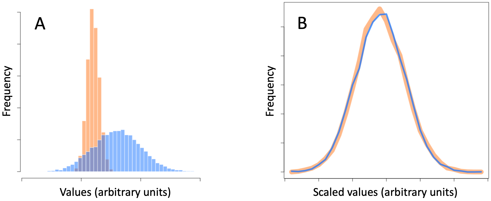
Figure 2.8. Linear feedback creates greater inequality only in absolute terms. Panel A shows the distribution of a quantity before (ochre) and after (blue) a period of proportional (i.e. linear) positive feedback. Panel B shows the same two distributions after re-centering and re-scaling. The blue line and the thicker ochre line correspond to the blue and ochre distributions shown in panel A.
If we shift and scale the final values appropriately, the start and end distributions become identical, as in Figure 2.8B. To put it another way, when everybody in a population is subject to exactly the same amount of self-reinforcing feedback, the population becomes more unequal/polarized in absolute terms, but the proportions of people at the extremes of the distribution remain the same. Social relationships remain much the same as before. The middle ground does not disappear.
In contrast to the above situation, Runaway Polarization – mediated by greater-than-linear positive feedback – changes the distribution of the quantity subject to feedback. As we saw already, under RAP relative values (as well as absolute values) move further apart. In both absolute and relative terms, those who have more acquire more, and those who have less end up with less. This movement toward the extremes depletes the middle ground.
Crucially, even among people who are all benefiting from a virtuous cycle of RAP (i.e. ignoring anyone caught in a complementary vicious cycle), relative to the average value, those with higher initial values end up with much more than those who started below average. Over time, RAP always depletes the middle-ground. As an example, Figure 2.9A shows the distribution of a quantity (e.g. per-family wealth) before (inset) and after several virtuous cycles of RAP (main plot).
At the beginning, all values are observed with equal frequency, creating a flat distribution. I have plotted the two distributions separately because the range of the initial values (i.e. the horizontal axis range) is negligibly small compared to the range of the final values. As we saw in Figure 2.6, under RAP, those with more get disproportionately higher return rates and move away from the rest of the population at increasingly faster rates. This process creates the long tail of the distribution in Figure 2.8A. (red box). In Figure 2.8B, I have combined the cases in the long tail of Figure 2.8A (values inside the red box) into a single value in order to highlight that under RAP, most people end up at the extreme ends of the population distribution. In relative terms, the middle ground is emptied-out.
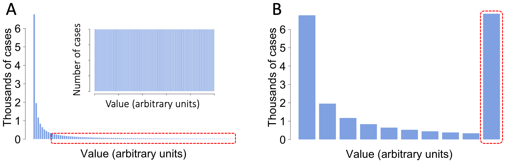
Figure 2.9. RAP empties the middle ground. Panel A shows the population distribution of a quantity before (inset) and after several virtuous cycles RAP for 20,000 simulated individuals. In Panel B, all values greater than an arbitrary threshold level (dashed red box in both panels) have been summed to highlight that RAP moves people away from the center-ground and towards the extremes.
In the above example, I simply added up the frequencies of extreme values to highlight the way most values in the distribution are at the ends of the distribution. For quantities that have stable maximum/minimum values either as stable steady states or as physical limits (e.g. water level in a reservoir), the barbell-shaped distribution emerges naturally. In Figure 2.10, the right-hand column shows the progressive changes in the distribution of something that can increase indefinitely (such as wealth) undergoing RAP. The starting distribution (top right-hand panel) is a relatively narrow bell-curve. At subsequent timepoints, the distribution becomes both broader, and also skewed towards higher values. If I continued the simulation beyond timepoint 3, the distribution would look increasingly like that in Figure 2.10A.
The left-hand panels in Figure 2.9 are analogous to those in the right-hand column, except that the system I have simulated has two stable steady states, one at the extreme left of the value range and the other at the extreme right. The average value of the starting distribution is an unstable steady state (see Fig. B2.3B). So, over time, points on either side of this unstable steady state move further and further to that side, depleting the middle-ground.
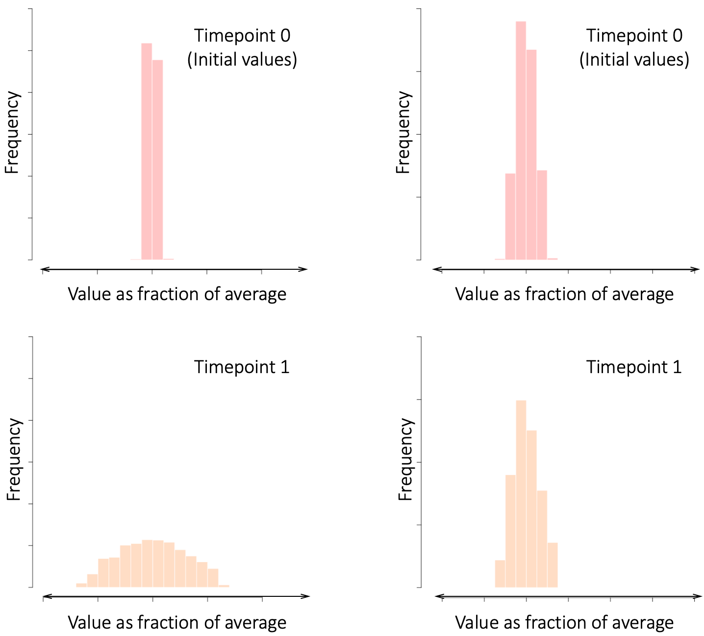
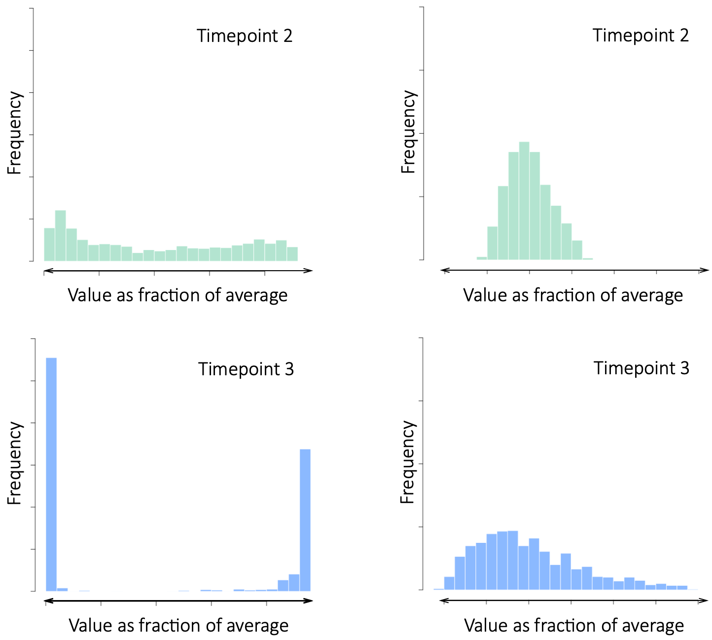
Figure 2.10. How RAP depletes the middle ground. Left column panels depict the evolution over time of a system with two stable steady states that act to limit further polarization. The right-hand column shows the effect of RAP on a system characteristic with no limit to growth.
In human systems with stable steady states (e.g. market-share in a winner-takes-all market), growth limits are often overcome by the winners changing the rules to move the steady states further apart (e.g. expanding beyond a national market to international markets), or create new dimensions for growth (e.g. Amazon going from being an online bookseller to a general marketplace and then to selling cloud-services).
To emphasize the ubiquity of positive feedback driven inequality/polarization in Human Systems, Box 2.5 highlights how the concept has been repeatedly discovered over the past century across multiple disciplines.
Box 2.5. Feedback-Mediated Polarization Déjà Vu
Feedback-mediated polarization has been “discovered” and called different names across many disciplines over the past century. Below are some examples.
Cumulative Causation was the name given to the self-reinforcing and cumulative nature of inequality first described by the American economist Thorstein Veblen in 1898 13, and later formalized and extended by the Swedish economist and Nobel Laureate Gunnar Myrdal in a series of publications starting in 1944 14.
The rise and fall of Fashions. In a 1904 paper 15, the Prussian social philosopher Georg Simmel proposed that the rise and fall of fashions involves a self-amplifying trend (adoption of a new fashion) that becomes self-limiting (the fashion becomes unfashionable) as it spreads across society. “Union and segregation are the two fundamental functions which are here inseparably united…”, wrote Simmel. As we will see in Chapter 5, Simmel’s description closely matches the most mechanism underlying RAP.
The Iron Law of Oligarchy, developed by Robert Michels in a 1911 11 posits that, the larger they become, the more human organizations require division of labor and a professional bureaucracy, conditions that inevitably lead to the emergence of elites. The topic is now part of ‘Elite Theory’ studies.
Schismogenesis (formation of social divisions) is a theory proposed by the multi-talented anthropologist Gregory Bateson in 1935 16,17. It suggests that self-perpetuating cycles of interactions among individuals or groups (i.e. positive feedback loops) can generate ever-greater polarization and division within and among human societies.
Richardson’s model of conflicts, first published on the eve of World War II 18, used the concepts of feedback loops and dynamical systems modeling to predict conditions leading to wars. It was widely studied for decades 19, but criticized for being overly simplistic 20.
Amity-Enmity Complex was a theory proposed in a 1948 book 12 by the racialist British anthropologist Sir Arthur Keith FRS. Keith held that humans have evolved to live in small competing communities (so called ‘in-groups’ and ‘out-groups’). As we will see in the coming chapters, competition among cooperative groups creates self-reinforcing RAP dynamics.
Spiral of Silence posits that, in some settings 21,22, people avoid expressing unpopular (minority) opinions, creating a positive feedback loop that reinforces the perception of homogeneity. The model was first proposed by the German political scientist Elisabeth Noelle-Neumann in 1974 based on her studies of German national elections 23.
The Matthew Effect refers to the parable in the Gospel of Matthew (25:29) “to every one who has will more be given […]; but from him who has not, even what he has will be taken away”. The term was coined by the sociologist Robert K. Merton 13 in 1968 to explain how scientists become prominent through self-reinforcing cycles of accumulated privileges and plaudits 24,25.
Stigler’s law of eponymy states that “a discovery is always named after the wrong one of its multiple discoverers” 26 (because those who have more recognition tend to get more recognition). “Stigler’s Law” was a humorous name chosen by the statistician Stephen Stigler to describe what he considered a variant of Merton’s “Matthew Effect” (see above).
Lindy’s Law posits that how long some non-perishable things such as ideas or books will last is proportional to how long they have lasted so far (another form of more begets more). The mathematician Benoit Mandelbrot formalized the concept in his 1982 book, The Fractal Geometry of Nature.
The Matilda Effect is an inverted form of the Matthew Effect, in which women scientists tend to receive less recognition and fewer rewards in a self-fulfilling vicious circle. The term was coined by the historian of science Margaret Rossiter in 1993 27.
Viral Expansion Loops are positive feedback loops built into the adoption strategies of many internet-based companies (Facebook, LinkedIn, etc.), in which each new user attracts additional new users. See Adam Penenberg’s 2009 book “Viral Loop” 28 for history and examples. Viral Expansion Loops also underlie many pre-internet business models (e.g. Tupperware parties).
Boots Theory is an explanation of the poverty vicious cycle put forward by the English fantasy writer Terry Pratchett in a 1993 novel 29: “A really good pair of leather boots cost fifty dollars. […] A man who could afford fifty dollars had a pair of boots that’d still be keeping his feet dry in ten years’ time, while a poor man who could only afford cheap boots would have spent a hundred dollars on boots in the same time and would still have wet feet.
Ain’t We Got Fun? Is the title of a popular 1921 song about the rich getting richer and the poor getting poorer 30. I am listing it here to note that economic polarization is an old and recurring phenomenon 31,32, and various economic processes such as market bubbles 5, inflationary and deflationary cycles, and contagion/herding among traders 33 are feedback-mediated. In addition to such direct feedback, in their 1995 book 34, economists Robert Frank and Philip Cook, suggest that whenever you have many competitors and few winners, the best indicator of future success is past success (i.e. a positive feedback loop on the chances of success).
2.8 References
1. Åström, Karl Johan and Murray, Richard. Feedback Systems: An Introduction for Scientists and Engineers. (Princeton University Press, Princeton, NJ 08540, 2008).
2. Taleb, N. N. The Black Swan: The Impact of the Highly Improbable. (Random House, New York, New York, 2007).
3. Lepschy, A. M., Mian, G. A. & Viaro, U. Feedback Control in Ancient Water and Mechanical Clocks. IEEE Trans. Educ. 35, 3–10 (1992).
4. Sornette, D. Why Stock Markets Crash: Critical Events in Complex Financial Systems. (Princeton University Press, 2003).
5. Sornette, D. & Cauwels, P. Financial Bubbles: Mechanisms and Diagnostics. Rev. Behav. Econ. 2, 279–305 (2015).
6. Bishop, B. The Big Sort: Wht the Clustering of Likeminded America Is Tearing Us Apart. (First Mariner Books, 2009).
7. Bell, D. On Equality: I. Meritocracy and Equality. Public Interest 29, 29–68 (1972).
8. Sampson, R. J., Sharkey, P. & Raudenbush, S. W. Durable effects of concentrated disadvantage on verbal ability among African-American children. Proc. Natl. Acad. Sci. USA 105, :845-52 (2008).
9. Rakesh, D., Tsomokos, D. I., Vargas, T., Pickett, K. E. & Patel, V. Macroeconomic Income Inequality, Brain Structure and Function, and Mental Health. Nat. Ment. Health 3, 1318–1330 (2025).
10. Gladwell, M. Outliers: The Story of Success. (Back Bay Books. Little, Brown and Company, 2008).
11. Milanovic, B. The Haves and the Have-Nots: A Brief and Idiosyncratic History of Global Inequality. (Basic Books, 2010).
12. Sanghera, S. Empireworld: How British Imperialism Shaped the Globe. (PublicAffairs, Hachette Book Group, 2024).
13. Veblen, T. Why is Economics not an Evolutionary Science? Q. J. Econ. 12, 373–397 (1898).
14. Myrdal, G. An American Dilemma: The Negro Problem and Modern Democracy. (Harper & Brothers, 1944).
15. Simmel, G. Fashion. Am. J. Sociol. 62, 541–558 (1957).
16. Bateson, G. Culture Contact and Schismogenesis. Man 35, 178–183 (1935).
17. Bateson, G. Steps to an Ecology of Mind. (The University of Chicago Press, 1972).
18. Richardson, L. F. Generalized Foreign Politics. Br. J. Psychol. Monogr. Suppl. 23, (1939).
19. Rapoport, A. Lewis F. Richardson’s mathematical theory of war. J. Confl. Resolut. 1, 249–299 (1957).
20. Piaggio, H. T. H. Mathematics of the Armaments Race. Nature 144, 692 (1939).
21. Gurney, R. M., Dunlap, R. E. & Schaefer Caniglia, B. Climate Change SOS: Addressing Climate Impacts within a Climate Change Spiral of Silence. Soc. Nat. Resour. 35, 1276–1296 (2022).
22. Wuestenenk, N., van Tubergen, F. & Stark, T. H. The influence of group membership on online expressions and polarization on a discussion platform: An experimental study. New Media Soc. https://doi.org/10.1177/14614448231172966, (2023).
23. Noelle-Neumann, E. The spiral of silence: A theory of public opinion. J. Commun. 24, 45–51 (1974).
24. Merton, R. K. The Matthew Effect in Science, II Cumulative Advantage and the Symbolism of Intellectual Property. ISIS 79, 606–623 (1988).
25. Merton, R. K. The Matthew Effect in Science. Science 159, 56–63 (1968).
26. Stigler, S. M. Stigler’s Law of Eponymy. Trans. N. Y. Acad. Sci. 39, 147–157 (1980).
27. Rossiter, M. W. The Matilda Effect in Science. Soc. Stud. Sci. 23, 325–341 (1993).
28. Penenberg, A. L. Viral Loop - From Facebook to Twitter, How Today’s Smartest Businesses Grow Themselves. (Hyperion Books, 2009).
29. Pratchett, T. Men at Arms. (Corgi, 1993).
30. Jones, B. There’s Nothing Surer / The Rich Get Rich and the Poor Get Laid off / In the Meantime,/ In between Time/ Ain’t We Got Fun?“. (https://en.wikipedia.org/wiki/File:Ain%27t\_we\_got\_fun\_-\_Billy\_Jones.ogg, 1921).
31. Piketty, T. & Zucman, G. Wealth and Inheritance in the Long Run. in Handbook of Income Distribution, Volume 2B 1303–1368 (Elsevierr B. V., 2015).
32. Atkinson, A. B., Piketty, T. & Saez, E. Top Incomes in the Long Run of History. J. Econ. Lit. 49, 3–71 (2011).
33. Baddeley, M. Herding, Social Influence and Economic Decision-Making: Socio-Psychological and Neuroscientific Analyses. Philos. Trans. R. Soc. Lond. B. Biol. Sci. 365, 281–290 (2010).
34. Frank, R. H. & Cook, P. J. The Winner-Take-All Society. (The Free Press, 1995).